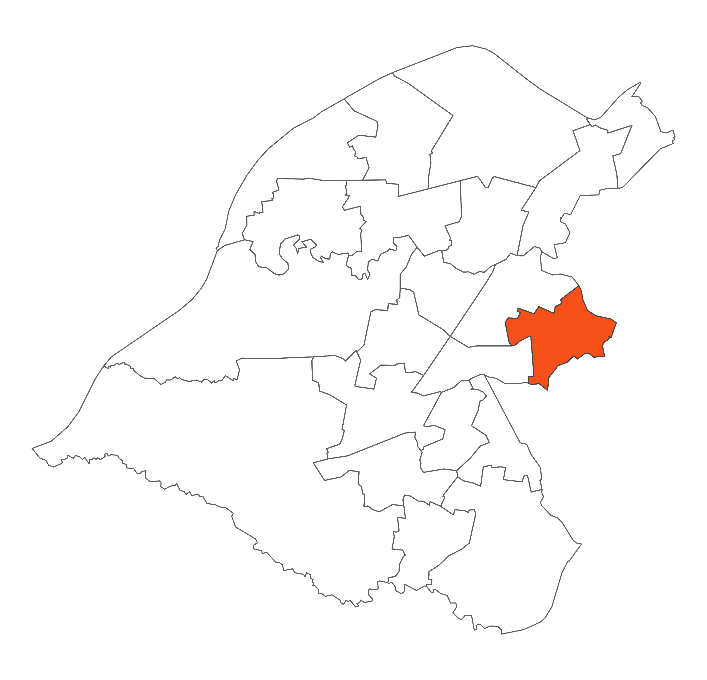

 Sale Moor is situated to the east of the Borough and shares a large part of its boundary with Manchester. Its northern boundary is the River Mersey and Sale Golf Course. The remaining boundaries are adjacent to residential areas on Northern Moor in Manchester and Sale. The M60 motorway runs through the ward and separates the main residential area from Sale Golf Course and the Mersey Valley.